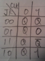
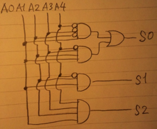

(a)0.5
0.5を2進数で正規化して表すと、 1.0 * 2^-1
指数はバイアスにより (-1) + 127 = 126
仮数は0
よって
| 符 | 指数 | 仮数 | |||||||||||||||||||||||||||||
| 0 | 0 | 1 | 1 | 1 | 1 | 1 | 1 | 0 | 0 | 0 | 0 | 0 | 0 | 0 | 0 | 0 | 0 | 0 | 0 | 0 | 0 | 0 | 0 | 0 | 0 | 0 | 0 | 0 | 0 | 0 | 0 |
(b)1.0
1 を2 進数で正規化して表すと 1.0 * 2^0
指数はバイアスにより、 0 + 127 = 127
仮数は0
よって
| 符 | 指数 | 仮数 | |||||||||||||||||||||||||||||
| 0 | 0 | 1 | 1 | 1 | 1 | 1 | 1 | 1 | 0 | 0 | 0 | 0 | 0 | 0 | 0 | 0 | 0 | 0 | 0 | 0 | 0 | 0 | 0 | 0 | 0 | 0 | 0 | 0 | 0 | 0 | 0 |
(c)1.25
1.25を2進数で正規化して表すと、
0.25*2 = 0.5
0.5 * 2 = 1
より、 1.01 * 2^0
指数はバイアスにより 0 + 127 = 127
仮数は 01
よって
| 符 | 指数 | 仮数 | |||||||||||||||||||||||||||||
| 0 | 0 | 1 | 1 | 1 | 1 | 1 | 1 | 1 | 0 | 1 | 0 | 0 | 0 | 0 | 0 | 0 | 0 | 0 | 0 | 0 | 0 | 0 | 0 | 0 | 0 | 0 | 0 | 0 | 0 | 0 | 0 |
複数のHDDなどの外部記憶装置を使うことにより、高速化や、信頼性を高めたシステムのこと。
複数の外部記憶装置をまとめて一台の装置として管理する技術。
RAIDは以下の３つの技術を基本とする。
・ストライピングは、ひとつのデータを複数のHDDに分割して同時に書き込むことで、アクセス速度の向上を狙うもの。ただし分散する分、信頼性は低下する。
・ミラーリングはひとつのデータを複数のHDDに同時に書き込むこと。信頼性は向上するが、アクセス速度は変わらない。
・パリティ情報の保持は、例えば３つのデータがあった時に、そのうちの２つのデータから３つ目のデータを作る。この３つ目の情報をパリティ情報と呼び、信頼性が向上する。
★RAID0
ストライピングすることによりアクセス速度向上
★RAID1
ミラーリングにより信頼性の向上
・RAID2
ストライピング＆誤り訂正コードによる信頼性の向上
・RAID3
ストライピング＆パリティ情報
・RAID4
ストライピング＆ブロック毎にパリティ情報
★RAID5
ストライピング＆ブロック毎にパリティ情報&パリティ情報の分散
・RAID6
ストライピング＆二次元的にHDDを配列＆パリティを二重にとる。
・RAID7
ストライピングと同時に、ＨＤＤのＲＡＩＤコントローラ上にリアルタイムＯＳを搭載してパリティ情報をダイナミックに生成、監視する。
RAID 0 , 1 , 5 が頻繁に使われている。
DMAにより、メモリーとメモリー、又は入出力機器がCPUを介さずに直接メモリーとデータの送受信をすることが可能にするもの。
周辺機器からメモリーに大量のデータを送信する場合、CPUを介すPIO方式では、周辺機器からメモリまでの遅い送信が終了するまでCPUに負荷が掛かり続けるが、DMA方式であれば、送信中CPUは別の処理に割り当てることが可能であるというメリットがある。
| 枠１(最近参照) | 0 | 1 | 2 | 3 | 0 | 1 | 4 | 0 | 1 | 2 | 3 | 4 |
| 枠２ | 0 | 1 | 2 | 3 | 0 | 1 | 4 | 0 | 1 | 2 | 3 | |
| 枠３ | 0 | 1 | 2 | 3 | 0 | 1 | 4 | 0 | 1 | 2 | ||
| 枠４(昔参照) | 0 | 1 | 2 | 3 | 3 | 3 | 4 | 0 | 1 | |||
| ページフォールト | ● | ● | ● | ● | ● | ● | ● | ● | ||||
| 参照ページ | 0 | 1 | 2 | 3 | 0 | 1 | 4 | 0 | 1 | 2 | 3 | 4 |
表より８回
(i)ページ枠数：３
| 枠１ | 0 | 1 | 2 | 3 | 0 | 1 | 4 | 4 | 4 | 2 | 3 | 3 |
| 枠２ | 0 | 1 | 2 | 3 | 0 | 1 | 1 | 1 | 4 | 2 | 2 | |
| 枠３ | 0 | 1 | 2 | 3 | 0 | 0 | 0 | 1 | 4 | 4 | ||
| ページフォールト | ● | ● | ● | ● | ● | ● | ● | ● | ● | |||
| 参照ページ | 0 | 1 | 2 | 3 | 0 | 1 | 4 | 0 | 1 | 2 | 3 | 4 |
ページフォールト：９回
(ii)ページ枠数：４
| 枠１ | 0 | 1 | 2 | 3 | 3 | 3 | 4 | 0 | 1 | 2 | 3 | 4 |
| 枠２ | 0 | 1 | 2 | 2 | 2 | 3 | 4 | 0 | 1 | 2 | 3 | |
| 枠３ | 0 | 1 | 1 | 1 | 2 | 3 | 4 | 0 | 1 | 2 | ||
| 枠４ | 0 | 0 | 0 | 1 | 2 | 3 | 4 | 0 | 1 | |||
| ページフォールト | ● | ● | ● | ● | ● | ● | ● | ● | ● | ● | ||
| 参照ページ | 0 | 1 | 2 | 3 | 0 | 1 | 4 | 0 | 1 | 2 | 3 | 4 |
ページフォールト：１０回
(i)(ii)より、ページ枠数３より、ページ枠数４の方が１回多くページフォールトが発生していることが分かる。
これを”Beladyの例外”と呼ぶ。
Beladyの例外は、FIFO方式がページ数依存で動作を変えることに起因する現象である。LRUの場合はnページあるときの動作が、n+1ページあるときの動作を完全に一致する部分があるスタックアルゴリズムのため、ページ数が増えてもページフォールトの回数が増えることは起こり得ない。
ページテーブルに新たに参照ビット列を導入する。参照されると１になり、ページフォールトが起きる度に０にクリアされ、その時点で参照ビットが1のページを右にシフト、0のページを左にシフトさせ、左端のページがスワップ対象になるようにすることで、近似的にLRUを実現した待ち行列を実装することが可能となる。
LFU(Least Frequently Used)方式をそれぞれに組み合わせることに防止することが可能。LFUは参照された回数が最も少ないページをスワップ対象とする方式である。
IPのバージョンを示す。例えば4ならIPv4、6ならIPv6を示すが、両者はIPアドレスのビット数が32bitと128bitと大きく異なる。バージョンを確認することで、ヘッダの構成がどうなっているかを知るために必要。
・Identification (識別番号)
MTUを超える場合はパケットを分割する必要があるが、その分割されたそれぞれのパケットが、元は一つのデータなのか、あるいは全く別のデータなのかを識別するのに使用する。
分割されたある元は一つのデータのIPヘッダの識別番号は同一である。
・Flags
IPパケットの分割を制御する時に使用。３ビットで構成。
０ビット目：予約（未使用）
１ビット目：０なら分割可。1なら分割不可を示す。
２ビット目：０なら最後のフラグメントであることを示す。１なら後続のフラグメントがあることを示す。
・Fragment Offset
分割されたパケットが元のデータのどこの位置にあるのかを示す。
TTL( Time To Live ) 生存時間
ルータを経由する度に１ずつ減っていき、０になった時点で破棄されるようになっている。
配達不能のパケットがネットワーク上で循環し続け、輻輳が起こるのを防ぐために必要。
IPの上位層プロトコルを示す。
例えばTCPなら６を。UDPなら１７をなど。
IPヘッダの誤り検出に使用。経路途中で壊れていないかをチェックするためにある。
TTLがルータを経由する度に変わってしまうため、チェックサムも再計算する必要がある。
更新するもの
・TTL
経由する度に１減らす必要がある。０になった時に破棄したいから、不変ならそもそもTTLフィールドが存在する必要が無くなってしまう。
・ヘッダーチェックサム
TTLが更新するなら、当然チェックサムも更新しなければならない。
更新しないもの：上記以外
NATはプライベートIPアドレスと、グローバルIPアドレスを変換する。
NATは予め用意されたグローバルIPアドレスと、それに割り当てられたプライベートIPアドレスの対応表を持っており、これに従ってパケットの送信元IPアドレスの部分をグローバルIPアドレスに変換し、送信先に送信する。
逆に返信が来た場合は、同様に対応表を使って送信先IPアドレスの部分をローカルIPアドレスに変換し、対象のローカル内のホストに送信する。
IPv6への移行はほとんど進んでいない。これは導入側へのメリットがほぼ無いからである。IPv4が広く使われている世界で、単独でIPv6を導入しても、通信する相手が誰も居ないのでは意味が無いし、導入するにもコストが掛かる。さらにNATなどの少数のIPで多くの端末を賄える技術があるために、IPアドレスの枯渇がそれほど問題になりにくい現状がある。
この現状を打開するには、IPv6でないと出来ない魅力的なサービスや機能を提供するしかない。
4bit全加算器。A0?A3とB0?B3にそれぞれ4bit入力し、Y3Y2Y1Y0に加算結果を出力し、C0~C4は桁上りを出力する。
A7-1の回路よりも、C4の結果が早く確定するため、例えばC5以降にも桁が続くとすれば遅延時間が少なくなる。全ての桁をC4のようにすれば、n桁の場合log(n)で計算処理可能。このような回路をキャリルックアヘッド回路と呼ぶ。
JKフリップフロップ回路
クロック時に入力を受け付けるフリップフロップ回路であり、左半分をマスターFF、右半分をスレーブFFとすれば、クロックがアサート時にマスターが値を読み込み、ネゲート時にQに結果を出力する回路である。SRラッチの禁止入力を克服した回路である。
| CLK | J | K | Q | ¬Q |
| 0 | * | * | Q | ¬Q |
| 1 | 0 | 0 | Q | ¬Q |
| 1 | 0 | 1 | 0 | 1 |
| 1 | 1 | 0 | 1 | 0 |
| 1 | 1 | 1 | ¬Q | Q |

3bitカウンタ。(B2,B1,B0)とすると、
(0,0,0)→(0,0,1)→(0,1,0)→(0,1,1)→(1,0,0)→(1,0,1)→(1,1,0)→(1,1,1)
BOを出力するJKFFをJK0,B1を出力するのをJK1、B2をJK2とすれば、JK0はクロック入力の度に出力が反転し、JK1はJK0の出力B0が０のときかつクロック入力時に反転。JK2はJK1の出力B1が０のときかつクロック入力時に反転。
| A4 | A3 | A2 | A1 | A0 | S2 | S1 | S0 |
| 0 | 0 | 0 | 0 | 1 | 0 | 0 | 0 |
| 0 | 0 | 0 | 1 | 1 | 0 | 0 | 1 |
| 0 | 0 | 1 | 1 | 1 | 0 | 1 | 0 |
| 0 | 1 | 1 | 1 | 1 | 0 | 1 | 1 |
| 1 | 1 | 1 | 1 | 1 | 1 | 0 | 0 |
S0 = (¬(A4)*¬(A3)*¬(A2)*A1)+(¬(A4)*A3*A2*A1)
S1 = (¬(A4)*A2*A1)
S2 = A4*A3*A2*A1
なので、
